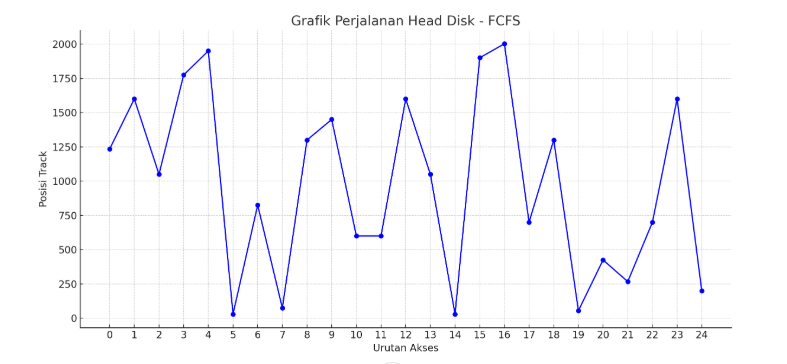

Materi 1
Diketahui: Jumlah track = 2000, posisi head di track 1234.
Urutan track yang perlu diakses: 1600, 1050, 1775, 1950, 30, 825, 75, 1300, 1450, 600, 600, 1600, 1050, 30, 1900, 2002, 700, 1300, 55, 425, 267, 700, 1600, 200.
Jawaban
Tanggal lahir: 03-06-2002 | NIM: 2303010267
[x1] = 30, [x2] = 600, [x3] = 2002, [x4] = 267
1. FCFS (First Come First Serve)
Total lintasan = 19,191 tracks
2. SSTF (Shortest Seek Time First)
Total lintasan = 3,745 tracks
3. SCAN
Total lintasan = 3,742 tracks
4. LOOK
Total lintasan = 3,738 tracks
5. C-SCAN
Total lintasan = 3,960 tracks
6. C-LOOK
Total lintasan = 3,955 tracks
7. N-Step SCAN
Total lintasan = 3,742 tracks
Grafik
